漸明空間
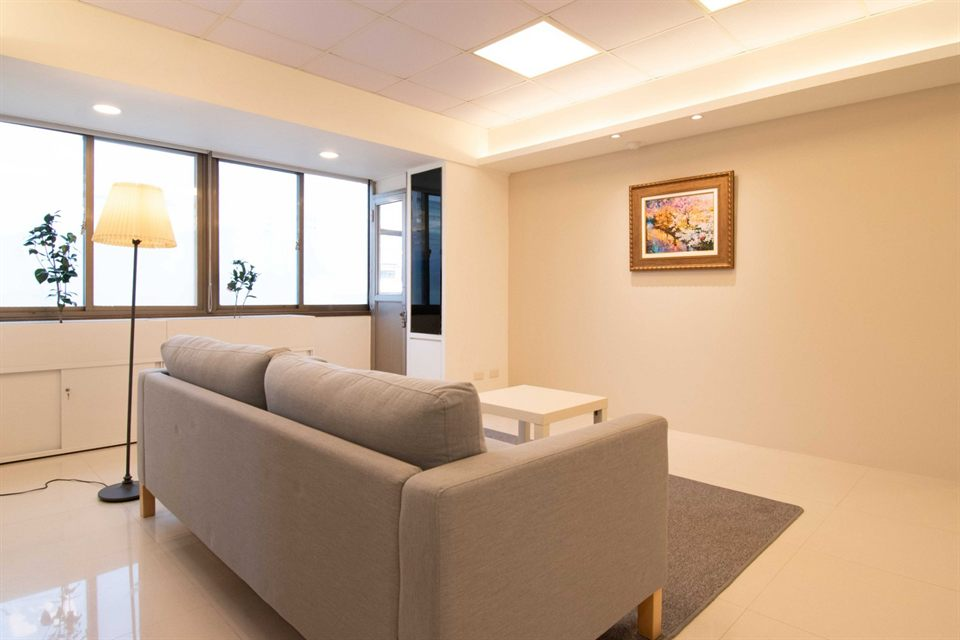
一個讓人安心停留、對話與思考的地方
漸明心理諮商所位於臺北市大安區，鄰近捷運忠孝新生站。我們相信，一個適切的空間，能夠支持人們在其中安心地表達、聆聽與思考。
因此，在規劃漸明時，我們不只考慮空間的實用性，也重視隱私、舒適，以及人與人之間互動的可能性。
漸明設有獨立的心理諮商室及多功能室，希望這裡既能支持個人與關係的探索，也能成為專業工作者交流、學習與合作的場所。
心理諮商室
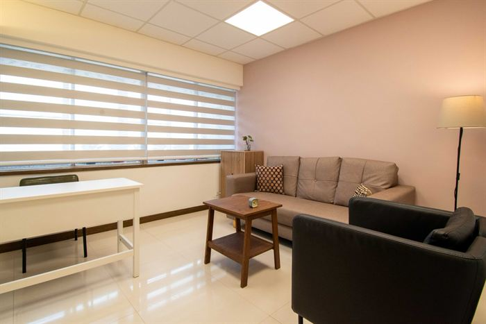
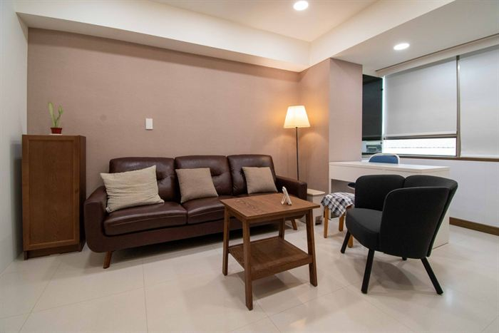
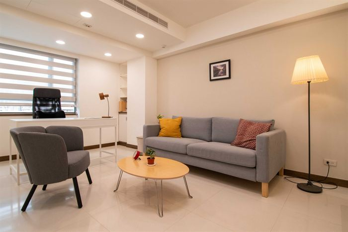
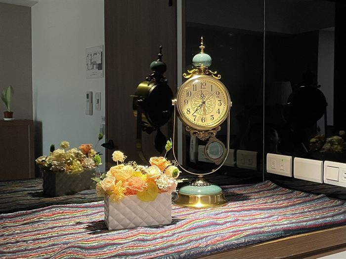
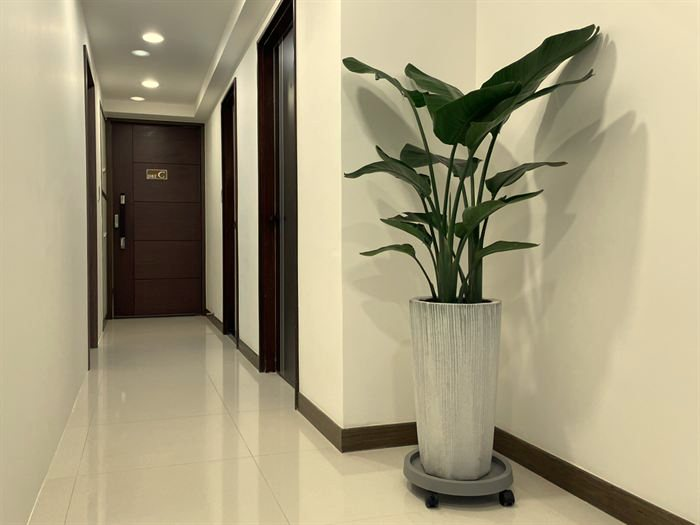
心理諮商需要一個能夠安心談話、尊重個人隱私的環境。漸明的諮商空間以安靜、舒適為原則，讓前來諮商的人能夠暫時放下日常生活的忙碌，在與心理師的對話中，以自己的步調探索內在經驗、情緒與關係。
我們希望這裡是一個可以慢慢理解自己，也能容納尚未找到答案的地方。
多功能室
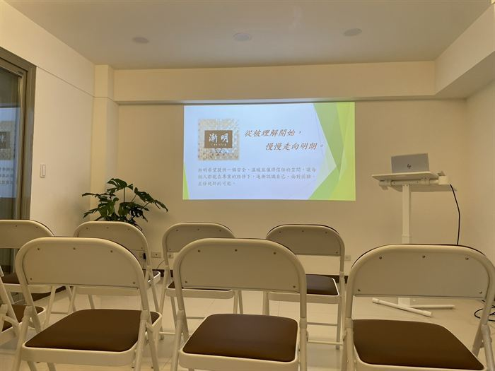
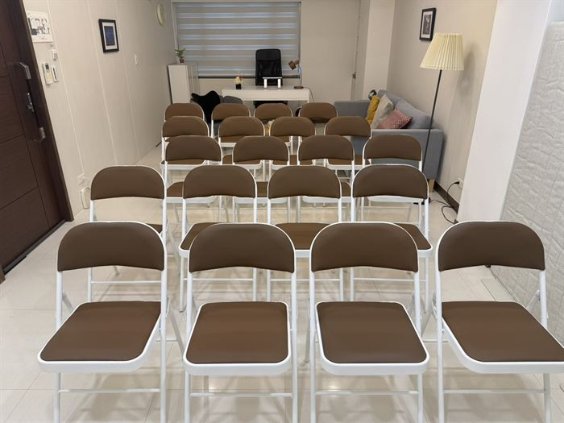
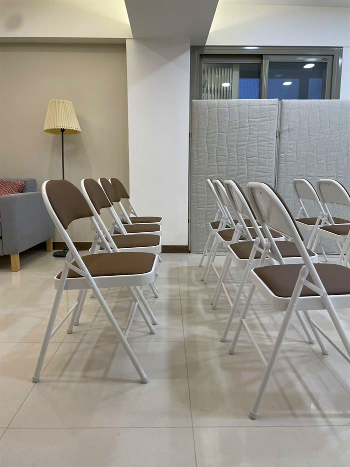
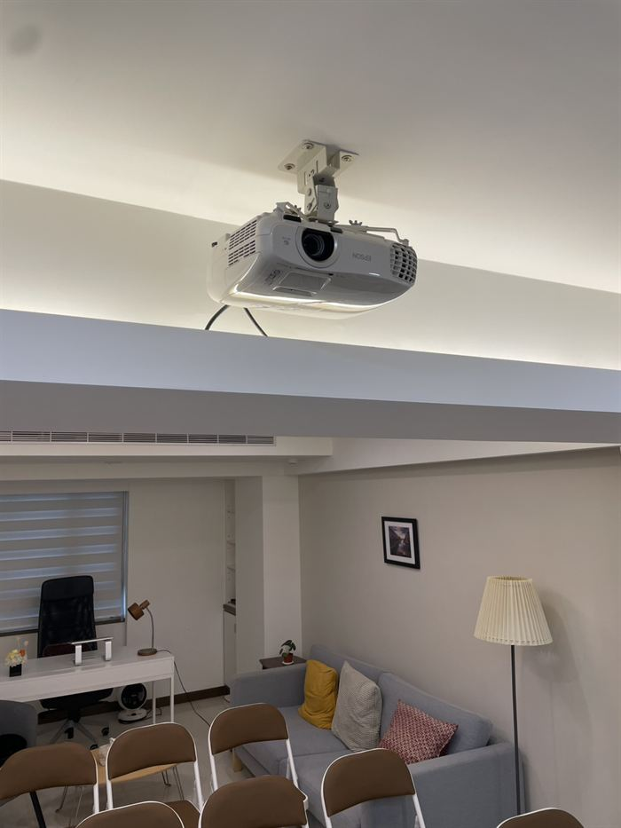
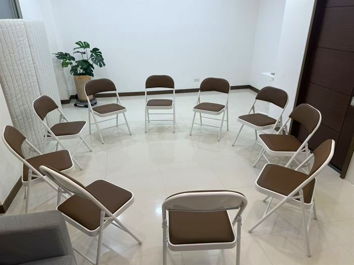
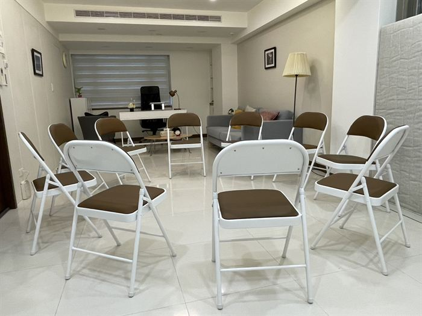
讓專業對話與共同學習在這裡發生。
除了心理諮商服務，漸明也希望提供一個讓專業工作者交流與學習的空間。多功能室可容納約20人，備有投影設備及簡易音響，適合舉辦專業培訓、講座、團體督導、團體諮商、及讀書會等活動。
我們歡迎心理健康及其他相關專業領域的工作者與團體，在不影響本所心理諮商服務的前提下，洽詢場地租借。
多功能室租借適合活動：
- 專業培訓與工作坊
- 講座與讀書會
- 團體督導
- 團體諮商及專業討論
- 其他符合空間性質的專業交流活動
空間與設備：
- 容納人數約20人（依活動形式及座位配置調整）
- 備有投影設備及簡易音響
使用時間、費用及其他需求請事先洽詢。
多功能室租借洽詢
歡迎透過以下方式聯繫漸明，並提供活動性質、主辦單位、預計人數，以及希望使用的日期與時段。我們將協助確認場地是否適合及可供使用。